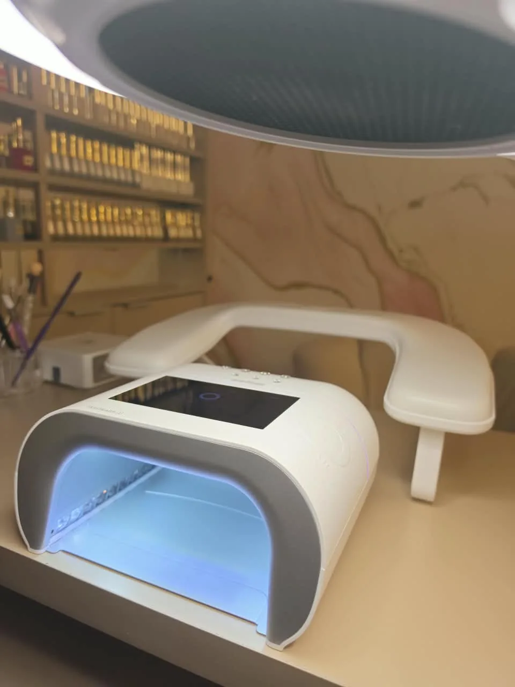
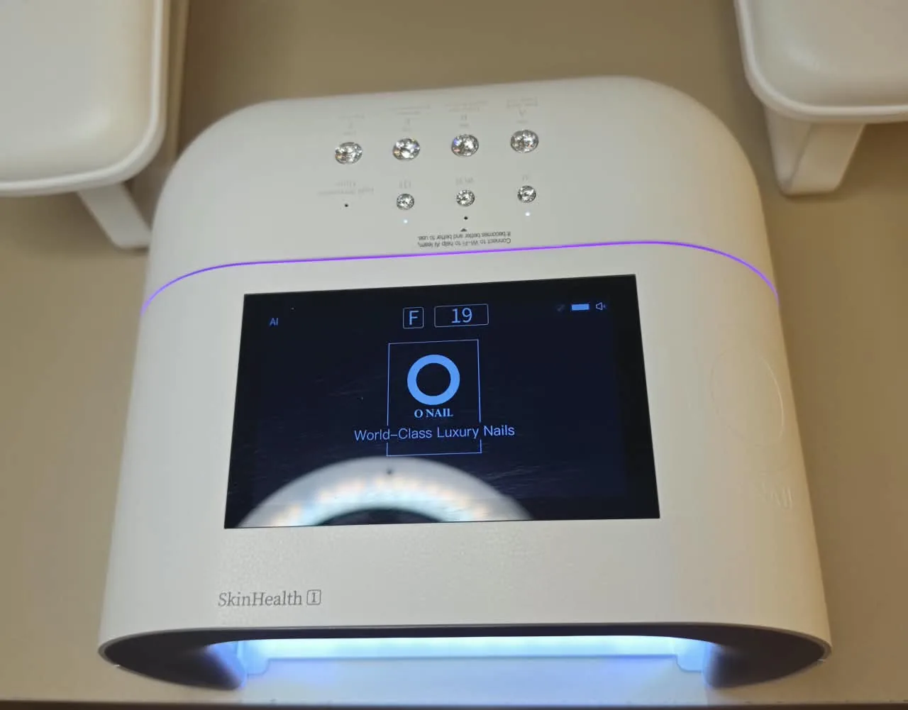
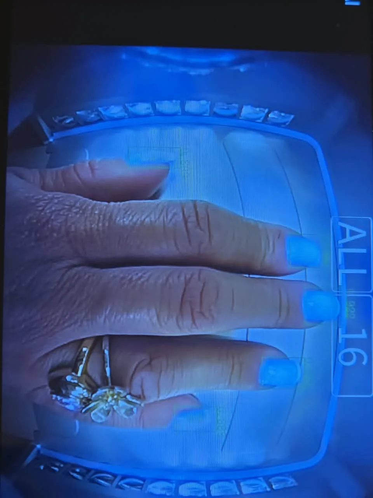
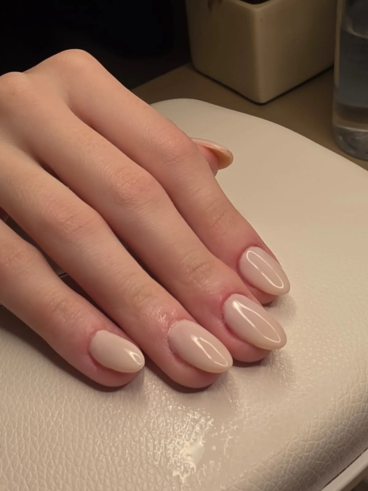

Cabine de unha faz mal ou causa alergia ao gel?
Por Nayara das Dores Santos, nail designer e responsável técnica do Manicura Express Nails, no Anhangabaú, em Jundiaí/SP · publicado em · atualizado em
A cabine de unha, por si só, não causa alergia — e um estudo que mediu 17 cabines de salão considerou pequeno o risco de a luz UV da cabine causar câncer de pele, mesmo com uso frequente5. O cuidado real é com a cabine fraca ou que não combina com o gel: a polimerização fica incompleta e sobra monômero livre na superfície da unha1, e é o contato repetido da pele com esse material que pode levar à alergia2. Por isso a escolha da cabine é uma questão de segurança, não só de durabilidade.
O que acontece quando o gel não polimeriza direito?
Gel de unha é feito de moléculas pequenas — os monômeros — que, ao receber luz na frequência certa, se ligam umas às outras e formam uma camada firme. Esse processo se chama polimerização (é a “secagem” na cabine), e quem o dispara é um ingrediente chamado fotoiniciador.
Quando a polimerização acontece por inteiro, os monômeros ficam presos dentro dessa rede.
Quando ela fica pela metade, sobra monômero livre — molécula solta, que pode sair do gel e chegar à pele1. E é aí que o assunto deixa de ser só estético.
- Monômero:
- molécula pequena do gel que, com a luz, se liga a outras e endurece.
- Polimerização:
- a reação que transforma o gel líquido em camada firme; no gel, ela é disparada pela luz da cabine.
- Fotoiniciador:
- ingrediente que absorve a luz da cabine e dá a partida na polimerização.
- HEMA:
- hidroxietil metacrilato, monômero comum em géis e o que mais aparece nos testes de alergia a produtos de unha2.
- TPO:
- fotoiniciador muito usado em géis, hoje proibido em cosméticos no Brasil6 e na União Europeia7.
- DMPT:
- N,N-dimetil-p-toluidina, outra substância de produtos para unhas proibida pela mesma resolução da Anvisa6.
Por que o gel mal polimerizado se liga à alergia?
O monômero mais conhecido do setor é o HEMA. Ele não é proibido, é comum, e não faz mal a todo mundo. O que ele faz — como outros sensibilizantes de contato — é aumentar o risco de alergia quando toca a pele repetidas vezes. Um levantamento em 11 clínicas europeias mostrou que mais de 9 em cada 10 pessoas com alergia a produtos de unha reagiram justamente ao HEMA2.
A palavra importante é pele. Monômero preso numa camada bem polimerizada, sobre a unha, é uma coisa. Monômero livre em contato com a pele em volta, semana após semana, é outra.
Polimerização incompleta aumenta esse contato: deixa material que não reagiu na superfície1 e, quando o serviço precisa ser refeito antes da hora, a pele em volta volta a ser exposta.
Um ponto de honestidade: dermatite de contato alérgica é diagnóstico médico. Quem identifica e acompanha é o dermatologista ou o alergista — se notar coceira, vermelhidão ou bolhas em volta da unha, procure um. O que uma profissional bem formada faz é reduzir a exposição: escolher bem o produto, ajustar o protocolo, cuidar da polimerização completa e reconhecer quando o caso precisa de médico.
Cabine fraca atrapalha a polimerização?
Sim. Para o fotoiniciador funcionar, a luz precisa chegar na frequência que ele absorve e em quantidade suficiente. Se faltar uma das duas, a polimerização fica incompleta13.

A frequência. Cada fotoiniciador “enxerga” melhor uma faixa de luz. Os mais usados em gel, como o TPO e o BAPO, absorvem mais forte no UVA e continuam absorvendo um pouco em direção à luz violeta3. A cabine precisa emitir onde o gel absorve. Em aparelhos de dentista, que usam fotoiniciadores parecidos, um estudo mostrou que a luz de uma faixa só polimerizou menos o material com TPO, enquanto a luz de mais de uma faixa teve bom resultado com todos os fotoiniciadores testados4.
Na prática: não existe cabine boa em abstrato. Existe cabine que combina com o gel usado.
A quantidade. Aqui está um dado que pouca gente conhece. Um estudo americano mediu 17 cabines de 16 salões e encontrou diferença de cerca de 26 vezes na intensidade de luz UVA entre a mais fraca e a mais forte5. Duas cabines com a mesma aparência e o mesmo tempo de ciclo podem entregar quantidades de luz muito diferentes — e menos luz significa mais monômero sobrando1.
É por isso que “coloquei o tempo que o fabricante mandou”, sozinho, não basta.

E a luz UV da cabine, faz mal para a pele?
Cabines de LED para unha também emitem luz UVA. O mesmo estudo das 17 cabines concluiu que, mesmo com muitas sessões, o risco de câncer de pele pela luz da cabine continua pequeno — e sugeriu proteger a pele das mãos, com protetor solar físico ou luvas com proteção UVA5.
No estúdio, a cabine acende a luz só sobre as unhas, segundo a fabricante8, o que poupa a pele em volta. Veja como ela funciona na página da cabine de unhas com IA em Jundiaí.
E o TPO, que foi proibido?
Desde o início de fevereiro de 2026, produtos com TPO não podem mais ser vendidos nem usados no Brasil — inclusive em salão. A proibição veio da Anvisa, pela RDC 995/2025, aprovada em 30 de outubro e publicada em 3 de novembro de 2025, com prazo de 90 dias para esses produtos saírem de circulação6. A União Europeia proibiu antes: lá a regra vale desde 1º de setembro de 20257 — e é essa data de setembro que circula nas redes.
A mesma resolução proibiu também o DMPT (N,N-dimetil-p-toluidina), outra substância usada em produtos para unhas6. Vale conferir o rótulo: um produto pode estar livre de TPO e ainda trazer DMPT.
A indústria está reformulando os géis, e uma fórmula nova pode usar outro fotoiniciador — que absorve melhor outra faixa de luz3.
Por isso, quando o produto muda, a cabine também entra na conversa: vale conferir se os dois combinam — mesmo que nada mais tenha mudado na rotina.
Como saber se a polimerização está completa?
Não existe teste caseiro confiável, mas há sinais que uma profissional atenta reconhece:
- Broca ou lixa que entope na remoção. Produto bem polimerizado sai em pó; produto mal polimerizado empasta.
- Superfície pegajosa além do esperado. Existe uma camada pegajosa normal em muitos produtos, que sai com o cleaner1. O que não é normal é o material ceder por baixo.
- Descolamento que começa pelo centro da unha, e não pela borda. Borda costuma apontar preparação; centro costuma apontar polimerização.
- Gel que amolece ou marca com o calor do dia a dia.
Como fazemos no Manicura Express Nails, em Jundiaí?
A cabine do estúdio é uma O NAIL, escolhida por critério técnico, não por preço. Os pontos que pesaram (dados informados pela fabricante8):
- Luz dupla, 365 nm + 405 nm. Duas faixas em vez de uma, cobrindo o UVA e o violeta, onde os fotoiniciadores dos géis absorvem3 — o mesmo princípio que, em aparelhos de dentista, manteve boa polimerização com fotoiniciadores diferentes4.
- 109 LEDs. Muitos pontos de luz para iluminar a unha por igual, inclusive o polegar e as laterais.
- Potência de linha profissional, cerca de 30 W.
- Luz só na unha. A cabine identifica cada unha e acende apenas sobre ela, poupando a pele em volta. (Segundo a fabricante, o reconhecimento é feito por um modelo de inteligência artificial embarcado.)

E o mais importante: todos os produtos que usamos são livres de TPO, em conformidade com a RDC 995/2025. A cabine faz parte do nosso protocolo Beleza Segura de biossegurança, junto com o kit esterilizado em autoclave.
Uma ressalva que faço questão de deixar escrita: não existe medição independente da intensidade de luz desta cabine — como não existe para quase nenhuma cabine do mercado. O que dá para afirmar é que o desenho da luz (duas faixas, muitos LEDs, luz só na unha) é adequado. A dose exata entregue só se conhece medindo.

Conheça a cabine O NAIL do estúdio em detalhe → Veja como é a nossa esmaltação em gel em Jundiaí →
Perguntas frequentes
Cabine de unha faz mal ou causa alergia?
A cabine, por si só, não causa alergia. O que pode levar à alergia é o contato repetido da pele com gel que não polimerizou por completo — e uma cabine fraca ou que não combina com o gel aumenta essa chance. Quanto à luz, um estudo com 17 cabines de salão considerou pequeno o risco de câncer de pele, mesmo com uso frequente.
Qual a diferença entre cabine UV e cabine LED?
LED é o tipo de lâmpada; UV é a faixa da luz emitida. Cabines de LED para unha também emitem UV — 365 nm está dentro do UVA. A diferença real está na faixa de luz emitida e na quantidade de luz, não na palavra do rótulo.
Cabine mais potente polimeriza melhor?
Não necessariamente. A polimerização depende de a luz chegar na faixa que o fotoiniciador do gel absorve. Potência sem essa combinação não resolve — e um estudo que mediu 17 cabines de salão encontrou diferença de cerca de 26 vezes na intensidade de luz UVA entre elas.
O que é TPO e por que foi proibido?
TPO é um fotoiniciador usado para polimerizar géis de unha. A Anvisa o proibiu pela RDC 995/2025 e, desde o início de fevereiro de 2026, produtos com TPO não podem ser vendidos nem usados no Brasil, inclusive em salão. A mesma resolução também proibiu o DMPT, outra substância usada em produtos para unhas.
Se minha unha descola, é a cabine?
Pode ser, mas nem sempre. Descolamento que começa pela borda costuma apontar preparação; pelo centro, costuma apontar polimerização. Há ainda causas fora da bancada — produtos de limpeza, medicamentos e condições de saúde.
Fontes
- Taki K, Nakamura T. Effects of curing conditions and formulations on residual monomer contents and temperature increase of a model UV gel nail formulation. Journal of Cosmetics, Dermatological Sciences and Applications, 2011;1(4):111-118. DOI: 10.4236/jcdsa.2011.14017
- Gonçalo M, Pinho A, Agner T, et al. Allergic contact dermatitis caused by nail acrylates in Europe. An EECDRG study. Contact Dermatitis, 2018;78(4):254-260. DOI: 10.1111/cod.12942
- Neumann MG, Miranda WG Jr, Schmitt CC, Rueggeberg FA, Correa IC. Molar extinction coefficients and the photon absorption efficiency of dental photoinitiators and light curing units. Journal of Dentistry, 2005;33(6):525-532. DOI: 10.1016/j.jdent.2004.11.013
- Boeira PO, Kinalski MA, Santos MBF, Moraes RR, Lima GS. Polywave and monowave light-curing units effects on polymerization efficiency of different photoinitiators. Brazilian Dental Science, 2021;24(4). DOI: 10.14295/bds.2021.v24i4.2661
- Shipp LR, Warner CA, Rueggeberg FA, Davis LS. Further investigation into the risk of skin cancer associated with the use of UV nail lamps. JAMA Dermatology, 2014;150(7):775-776. DOI: 10.1001/jamadermatol.2013.8740
- Agência Nacional de Vigilância Sanitária (Anvisa). Resolução da Diretoria Colegiada – RDC nº 995, de 30 de outubro de 2025 (DOU de 03/11/2025). Texto oficial no AnvisaLegis · Anvisa proíbe duas substâncias utilizadas em produtos para unhas (gov.br/anvisa, 29/10/2025)
- Comissão Europeia. Regulamento (UE) 2025/877, de 12 de maio de 2025, que altera o Regulamento (CE) n.º 1223/2009 quanto a substâncias CMR em produtos cosméticos (aplicável desde 1º/09/2025). Jornal Oficial da União Europeia, L 2025/877. EUR-Lex
- Ficha técnica da cabine publicada pela fabricante O NAIL (emissão 365 + 405 nm, 109 LEDs, cerca de 30 W, reconhecimento das unhas).
Observações de bancada (sinais de polimerização incompleta, padrões de descolamento) vêm da formação técnica da autora: Química Sem Mistérios 3.0, Superando a Alergia, V Workshop Master em Cabines e Descolamento Zero.
Este texto tem caráter informativo e não substitui avaliação médica. Em caso de suspeita de dermatite de contato, procure dermatologista ou alergista.